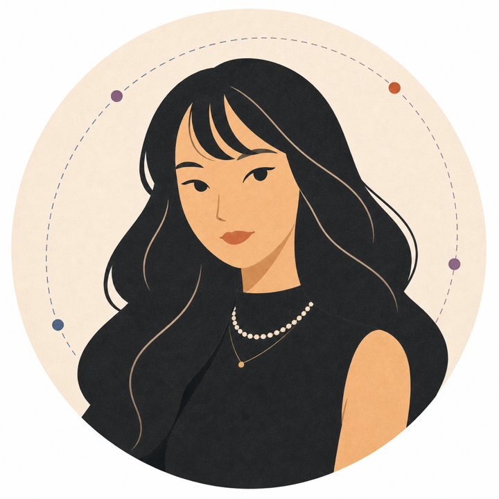

ResourceLoopResourceLoop
Product strategy / Business judgment业务判断 / 产品策略Turn campaign themes, product constraints, and human judgment into inputs for ad creation.把活动主题、商品约束与人的判断，变成广告搭建的输入。
Explore project细看项目I connect business judgment, evaluation discipline, and hands-on building — from post-training experiments to agent systems and real operations. 从后训练实验到 Agent 系统与真实业务，我把业务判断、评测纪律和亲手实现接在一起。

Hover to unfold · Explore the story移入展开 · 细看项目Tap to unfold · Explore the story点按展开 · 细看项目
Put judgment into products把判断做进产品
Turn campaign themes, product constraints, and human judgment into inputs for ad creation.把活动主题、商品约束与人的判断，变成广告搭建的输入。
Explore project细看项目Turn travel saves into a map you can verify and keep using.把旅行收藏整理成可核对、能继续使用的地图。
Explore project细看项目Translate a loosely described mood into music recommendations.把模糊的情绪描述，翻译成可检索的音乐推荐。
Explore project细看项目Make rhythm practice easier to follow with immediate, visible feedback.围绕节奏练习，尝试更及时、更清楚的反馈。
Explore project细看项目Keep a task moving forward让任务持续往前走
Codex finds roles, Notion holds state and profile data, and Muse applies.Codex 召回，Notion 记录状态与信息，Muse 执行投递。
Explore project细看项目Follow up on agent traces and ground judgments in evidence.从执行轨迹继续追问，把判断落回可核查的证据。
Explore project细看项目Turn course preferences into independent plans you can compare and revise.把选课偏好变成可比较、可修改的独立方案。
Explore project细看项目Understand capabilities and limits理解能力，也理解边界
Diagnose stalled GRPO after strong SFT by examining reward variance.从奖励方差出发，诊断强 SFT 之后的 GRPO 训练停滞。
Explore project细看项目Explore how data can transfer a preference without describing it directly.研究没有直接描述偏好的数据，如何传递模型偏好。
Explore project细看项目Ask what an explanation actually tells us about model behavior.围绕解释、证据和模型行为，继续问下一层问题。
Explore project细看项目A familiar role, recurring tasks, and substantial token usage. How might they add up to a product people keep paying for? 容易理解的用户心智、持续发生的任务，以及背后大量的 token 消耗。 它们怎样连成一个让人愿意一直付费的产品？
While updating my website, I wondered whether ResourceLoop had enough AI in it. Trying to explain the work brought me back to the decisions behind the product. 整理网站时，我有点担心 ResourceLoop 的 AI 成分不够。 想把这个项目介绍清楚，又让我回头看了一遍自己到底做了什么。
What I learned shipping VibeSearch: most of the “AI” work in a RAG product is actually a translation problem in disguise — and the spec for it is a PM artifact, not an engineering one. 做完 VibeSearch 我意识到：RAG 产品里大多数 "AI" 工作其实是翻译问题 —— 而这一层的 spec 应该由 PM 写，而不是工程师。